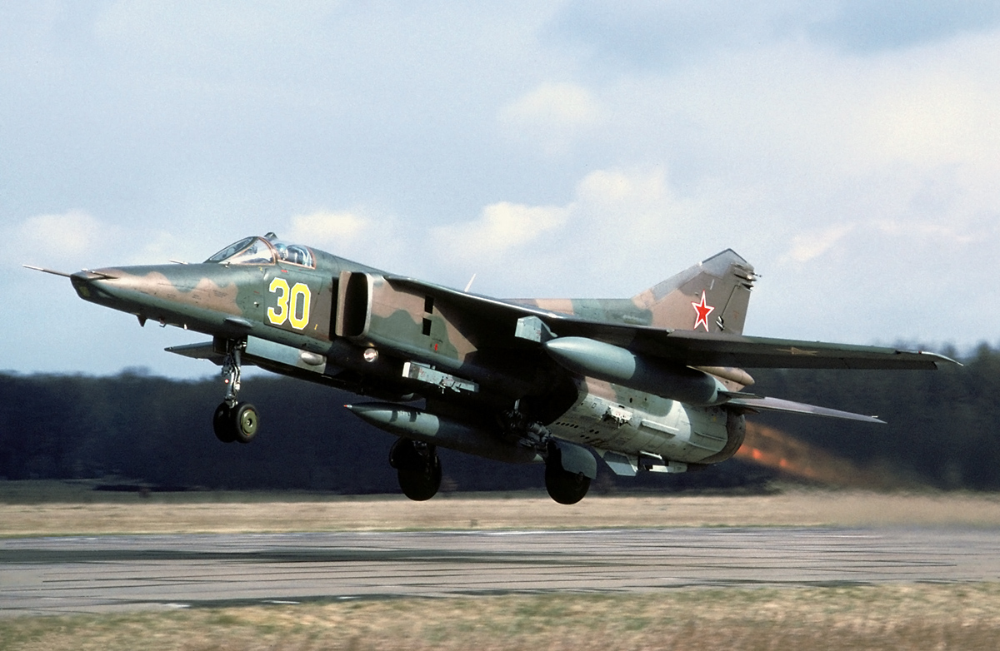
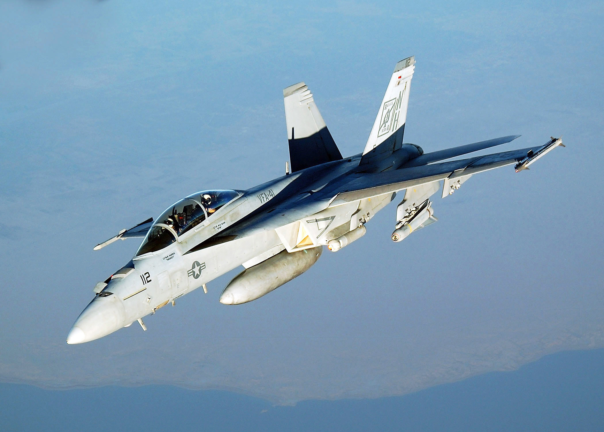
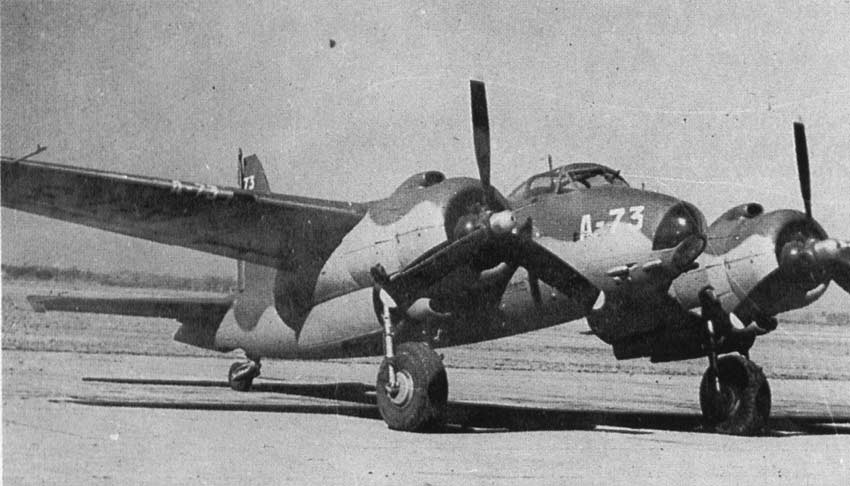

Сумрачный тевтонский гений
Истребитель-бомбардировщик

Истреби́тель-бомбардиро́вщик — фронтовой (тактический) истребитель, способный наносить удары по наземным и надводным целям противника.Сочетает качества истребителя и фронтового бомбардировщика, как правило способен применять мощное вооружение класса «воздух-земля». Основным отличием от штурмовика является способность вести манёвренный наступательный воздушный бой. Как правило, удары по наземным целям наносятся бомбардировщиками и штурмовиками под прикрытием истребителей. Истребители-бомбардировщики способны действовать без прикрытия, так как имеют и манёвренные характеристики, и вооружение, достаточное для противодействия истребителям противника и уклонения от огня вражеских средств ПВО. С другой стороны, бомбардировщики и штурмовики великолепно выполняют задачи по нанесению по наземному (морскому) противнику массированных авиаударов (в том числе по стационарным объектам и крупным боевым судам), но для свободной охоты за мобильным противником, таким как, например, одиночные танки или грузовые машины, те же бомбардировщики и штурмовики нередко просто неудобны. Напротив, истребитель-бомбардировщик, способный действовать без прикрытия, оптимален для выполнения такой задачи. Однако ещё одним недостатком истребителя-бомбардировщика в сравнении с обычным бомбардировщиком является более ограниченный боезапас для нанесения ударов по наземным целям.
Истребитель-бомбардировщик МиГ-27
Реактивные истребители-бомбардировщики

Первыми сверхзвуковыми самолётами, способными одинаково эффективно вести воздушный бой и атаковать наземные цели, были истребители 3-го поколения: советский МиГ-23Б, МиГ-23БН, МиГ-27, Су-17М, американский F-4, французский «Мираж» F-1. Однако задачи истребителей-бомбардировщиков в ходе боевых действий определяются доктриной их применения в конкретных военно-воздушных силах. К примеру, во время войны во Вьетнаме американские истребители-бомбардировщики F-105 привлекались исключительно к ударам по наземным объектам, хотя в происходивших столкновениях с истребителями противника в ряде случаев одерживали победы.
То есть, в отличие от поршневых истребителей-бомбардировщиков, реактивные истребители-бомбардировщики нередко обладают характеристиками, достаточными для применения в качестве универсального боевого самолёта — действующего как против воздушного противника, так и против наземного (надводного) противника. В частности, истребитель-бомбардировщик подходит для свободной охоты как за воздушным (самолёты, вертолёты), так и за наземным (надводным) (особенно мобильным) противником, а также для нанесения точечных ударов по наземным объектам, в случаях когда применение бомбардировщиков нецелесообразно.
Истребитель-бомбардировщик F/A-18F Super Hornet
Поршневые истребители-бомбардировщики

Первые истребители-бомбардировщики стали строиться ещё в эпоху поршневой винтомоторной авиации. Самые известные поршневые истребители-бомбардировщики:
Messerschmitt Bf.110 и Messerschmitt Me.210;
Spitfire (истребительно-бомбардировочная модификация);
Bristol Blenheim;
De Havilland Mosquito;
По замыслу создателей, поршневые истребители-бомбардировщики предназначались для использования в качестве универсальных самолётов, — для уничтожения воздушного и наземного противника. Однако на практике не всегда все было так гладко. И германские Bf.110 и Me.210, и британский Bristol Blenheim достаточно хорошо уничтожали вражеские бомбардировщики и транспортные самолёты и мобильного наземного противника (танки, автомашины, торпедные катера и прочие мелкие суда и т. д.), но явно проигрывали одномоторным истребителям.
Также они проигрывали бомбардировщикам и штурмовикам в способности разрушать хорошо укреплённые наземные цели (мосты, фабрики, крупные боевые корабли), но хорошо дополняли бомбардировочные соединения в качестве эскортных истребителей, а также в качестве самолётов подавления ПВО.
Аргентинский истребитель-бомбардировщик FMA I.Ae. 24 Calquín